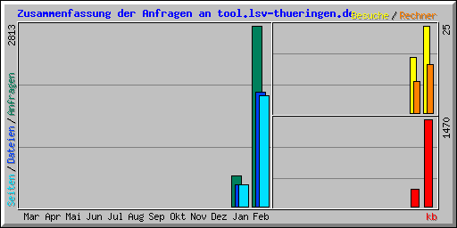

| Zusammenfassung nach Monaten | ||||||||||
|---|---|---|---|---|---|---|---|---|---|---|
| Monat | Tagesdurchschnitt | Monats-Summe | ||||||||
| Anfragen | Dateien | Seiten | Besuche | Rechner | kb | Besuche | Seiten | Dateien | Anfragen | |
| Feb 2014 | 351 | 221 | 216 | 3 | 14 | 1470 | 25 | 1731 | 1774 | 2813 |
| Jan 2014 | 119 | 84 | 85 | 4 | 9 | 288 | 16 | 342 | 338 | 476 |
| Summen | 1758 | 41 | 2073 | 2112 | 3289 | |||||
| Generated by Webalizer Version 2.23 |